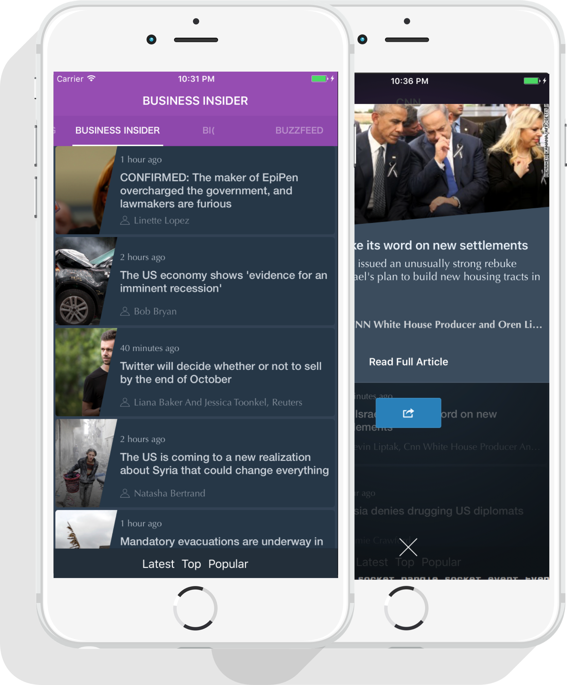

Welcome to my Page
Swift Developer for iOS/iPad/tvOS and Apple Watch
making amazing Sites and Apps. We put together these guides to help you get up and running in no time. These guides include Sass setup and install, how to use the Foundation Sass, JavaScript, accessibility and more.
E-Tips iOS App - Shift Manager for NHS Bank staff.

Lead iOS Developer / UX Designer.
- E-Tips enables NHS/ Agency bank staff to view and book upcoming shifts, view location and distance of shifts and manage timesheets.
- Designed, prototyped and architectured native iOS / Android Apps based on client needs.
- Worked Independently from concept (Sketch 3) to full working product (Swift/ Xcode) on iOS while pair programming Android version (Android Studio).
- Collaborated with back-end team for REST APIs (JSON/JWT).
- App authenticates users natively with Touch ID.
{kind=link}
Addison Lee - Leading London Taxi Booking App for iOS.
In-house iOS Developer.
- Produced taxi booking Swift iOS/ Apple Watch app collaboratively with an external agency.
- Built Xcode prototypes based on Design specs/ feedback from management.
- Deployed prototypes to iTunes Connect / Testflight for testing.
- Extensively used Mapkit, Core Location to track and display vehicle location.
- Built-in support for Push notification (APNS).
- App supports REST APIs in JSON/JSONP.

Yeyo - Music sharing platform for iOS.
Lead iOS Developer / Software Developer.
- Yeyo allows user to create 15 second videos of themselves singing their favourite song and share with followers.
- Worked inhouse with a remote team of Rails developers to deliver native iOS App with REST back-end.
- Applied knowledge of Bridging headers to add Swift to existing Objective-C source code.
- Extensive use of AVFoundation, Media Player and UIImagePickerControl to record user videos.
- Used GCD, Async tasks to upload user videos with JSON API securely.
- Built In-App purchases to enable users to unlock video filters and music.
Eurostar Entertainment for iOS
Lead iOS Developer
- Developed Static libraries, Objective-C frameworks for Capmedia that enable streaming of DRM enabled videos in Eurostar and Virgin Train Apps.
- Eurostar / Virgin trains able to provide offline entertainment to passengers via purchasing license of our custom frameworks and incorporating functionality in their Native apps.
- All libraries supported Native iOS Apps and Cordova Phone gap apps.

Newslytics - Analytics tool for News publishers.

Founder / Lead Developer / UX Designer
- Newlytics is a bootstrapped, 1 team member iOS App built on passion and coffee.
- Newslytics provides headlines and news summaries from 66 publishers such as BBC, CNN, BusinessInsider, BuzzFeed etc.
- Newslytics tracks user reading habits to find patterns that are useful to publishers.
- MVP Available in Appstore
- Newslytics will support iPhone/ Apple Watch / iPad and tvOS and iOS9 APIs such as Force Touch and Interactive Notifications.
- Newslytics is also great for live testing new Cocoa APIs and third party frameworks such Mixpanel Analytics, Advertising, Flurry before they are used in client Apps.
Tilt the Box - iOS Spritekit game.
Founder, Developer, UX Designer
- Tilt the Box is an Acceleromenter driven spritekit game built for iOS.
- Has been featured in Top 20 Apps in over 30 countries.
- Features include third party Ads, In-App purchases and Game Center.